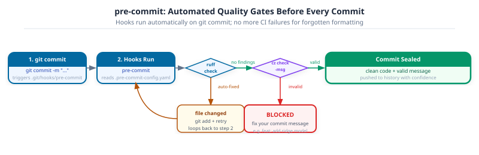

Chapter 24: Pre-commit automation

You push a commit at 11 pm. CI runs in three minutes. CI fails: an unused import that Ruff flags as an error. You fix it and push again. CI fails again: the commit message uses “Update stuff” instead of the conventional format. You fix the message. CI fails a third time: a notebook cell with raw outputs slipped through. Three round trips, 20 minutes, and your entire focus has shifted from the feature to the plumbing.
Every one of those failures could have been caught before the commit existed.
CI is the last line of defence. Pre-commit is the first. By the time CI runs, the broken commit is already in git history: teammates have pulled it, or will. Pre-commit runs the same checks the moment you type git commit, before the commit is created. A failed check aborts the commit with a specific error and a fixed version of the file. The commit only exists when it is clean.
Next: Chapter 25: Data validation with Pydantic applies the same automation mindset to runtime data contracts.
0. What is pre-commit and how to install it
pre-commit is a framework for managing git hooks. You define your checks in a single YAML file (.pre-commit-config.yaml) that’s committed with your code. Anyone who clones the repository and runs pre-commit install gets the identical set of checks on their machine, each in its own isolated environment with pinned tool versions.
Without pre-commit, quality checks are optional. With pre-commit, they’re automatic: the checks run before every commit and block it if they fail. You can’t forget to run ruff, and your colleagues can’t skip it.

Install pre-commit
In the grade-predictor project, pre-commit is already listed as a dev dependency and is installed with uv sync:
# Already included if you ran: uv sync --extra dev
uv add --optional dev pre-commit
# Activate the hooks for this repository (run once after every fresh clone)
uv run pre-commit installFor use outside a uv project, or as a system-wide tool:
# via pipx (recommended for standalone use)
pipx install pre-commit
# via pip (in any active environment)
pip install pre-commit
# macOS via Homebrew
brew install pre-commit
# Verify
pre-commit --version Key Concept: pre-commit install wires the hooks; it must run after every clone
The .pre-commit-config.yaml file describes what to run. pre-commit install writes the actual hook scripts into .git/hooks/. This second step is local-only and not version-controlled, so every developer who clones the repo must run it once. Add it to the project README under “Getting started”: otherwise new contributors will wonder why the hooks aren’t running.
1. Git hooks and why pre-commit manages them
A git hook is a script that runs at a specific point in the git workflow. pre-commit runs before git commit seals the commit; commit-msg runs after you write the message; pre-push runs before git push sends to the remote. Hooks can block the operation if they exit with a non-zero code.
Without pre-commit, hooks are raw shell scripts in .git/hooks/. They’re not version-controlled, so every clone starts with no hooks. Each developer installs them differently, and enforcement is inconsistent.
Pre-commit solves this by managing hooks as configuration: .pre-commit-config.yaml is committed to the repository. Anyone who clones it and runs pre-commit install gets the identical set of hooks, each running in an isolated environment with pinned tool versions.
uv add --optional dev pre-commit
uv run pre-commit install # install hooks into .git/hooks/This two-step setup must happen once after every clone.
Key Concept: pre-commit install must run after every clone
The hooks live in .pre-commit-config.yaml (versioned, shared), not in .git/hooks/ (local only). Without running pre-commit install, no hooks execute: the config file exists but nothing triggers it. Add it to your project README under “Getting started”.
2. The essential DS hooks
A complete .pre-commit-config.yaml for a DS project:
default_language_version:
python: python3.12
exclude: '(\.venv/|__pycache__/|\.pytest_cache/|_freeze/)'
repos:
- repo: https://github.com/pre-commit/pre-commit-hooks
rev: v4.6.0
hooks:
- id: check-yaml
- id: check-json
- id: check-toml
- id: end-of-file-fixer
- id: trailing-whitespace
- id: check-added-large-files
args: [--maxkb=1200] # block files larger than 1.2MB
- id: detect-private-key # catch secrets before they leave the machine
- id: check-merge-conflict
- id: no-commit-to-branch # prevent direct commits to main
- repo: https://github.com/astral-sh/ruff-pre-commit
rev: v0.5.0
hooks:
- id: ruff
args: [--fix, --exit-non-zero-on-fix]
types_or: [python, pyi, jupyter]
- id: ruff-format
types_or: [python, pyi, jupyter]
- repo: local
hooks:
- id: nbstripout-dev
name: nbstripout (dev)
entry: nbstripout --keep-output
language: python
types: [jupyter]
additional_dependencies: [nbstripout]
stages: [pre-commit]Walking through the important ones:
check-added-large-files: blocks data files committed accidentally. 1.2MB catches most CSVs.detect-private-key: scans for PEM headers and common secret patterns. It’s not foolproof, but it catches the common cases.no-commit-to-branch: prevents direct commits tomain. All changes go through branches.ruff --fix --exit-non-zero-on-fix: runs ruff, applies auto-fixes, and exits non-zero if it changed anything. This forces you to stage the fix before re-committing, which keeps the staging area honest.
Goal: Create
.pre-commit-config.yaml in grade-predictor with the config above. Run pre-commit install. Then try to commit a Python file with an unused import. Observe the hook blocking the commit and fixing the file. Stage the fix and commit again.
uv run pre-commit install # add unused import to core.py git add src/grade_predictor/core.py git commit -m "test: intentional ruff failure" # ruff should block and fix git add src/grade_predictor/core.py git commit -m "style: ruff auto-fixed unused import"
3. nbstripout: keeping notebooks clean
This is the one hook that almost no standard pre-commit tutorial covers, but it’s essential for any DS project with Jupyter notebooks.
Jupyter saves cell outputs, plots, and printed values inside the .ipynb JSON file. Without stripping them, every re-run of a notebook produces a diff of hundreds of lines even when the code itself hasn’t changed. git diff becomes unreadable. git blame becomes useless. PRs accumulate thousands of lines of changed JSON that nobody reviews.
It’s not a nice-to-have. It’s the difference between a reviewable diff and a wall of base64.
Two modes, two stages:
- repo: local
hooks:
- id: nbstripout-dev
name: nbstripout (dev)
entry: nbstripout --keep-output # strip metadata, keep outputs for review
language: python
types: [jupyter]
additional_dependencies: [nbstripout]
stages: [pre-commit]
- id: nbstripout-ci
name: nbstripout (ci)
entry: nbstripout --drop-empty-cells # strip everything before pushing
language: python
types: [jupyter]
additional_dependencies: [nbstripout]
stages: [pre-push]The --keep-output version keeps outputs in the committed file so reviewers can see what a cell produces without running it. The --drop-empty-cells version at push time ensures the remote branch has clean JSON that CI can read without noise.
Without nbstripout, a notebook
git diff after re-running a cell with a matplotlib plot looks like:- "outputs": [{"data": {"image/png": "iVBORw0KGgoAAAANSU..."}, ...}]
+ "outputs": [{"data": {"image/png": "iVBORw0KGgoAAAANSU..."}, ...}]
Thousands of base64 characters, one line each. The code changed by two characters. With nbstripout, the diff is two lines.
Goal: Add
nbstripout-dev to your .pre-commit-config.yaml. Create a simple notebook in grade-predictor, run a cell that prints a value, save it, then run git diff. Confirm the output is stripped in the staged version. Commit and push.
git add notebooks/analysis.ipynb git diff --staged # should show code, not output JSON
4. commitizen: enforcing conventional commits
In Chapter 22, you wrote conventional commit messages by hand. Commitizen enforces the format automatically via a commit-msg hook, and provides cz commit as an interactive alternative when you’re not sure what type or scope to use.
Add to pyproject.toml:
[tool.commitizen]
bump_message = "bump: v$current_version to v$new_version"
tag_format = "v$version"
update_changelog_on_bump = true
version_provider = "pep621"Add to .pre-commit-config.yaml:
- repo: local
hooks:
- id: commitizen
name: commitizen
entry: cz check
args: [--commit-msg-file]
require_serial: true
language: system
stages: [commit-msg]
- repo: https://github.com/commitizen-tools/commitizen
rev: v4.9.1
hooks:
- id: commitizen-branch
stages: [pre-push]With this in place, git commit -m "update stuff" is blocked. git commit -m "fix(core): correct weight normalization" passes.
Two more commitizen commands that pay for themselves:
cz bump # reads commit history, bumps version automatically
cz changelog # generates CHANGELOG.md from commit historyfeat commits bump the minor version. fix commits bump the patch. With update_changelog_on_bump = true, the changelog writes itself: no manual editing.
Pro Tip: cz bump replaces manual version management
Bumping a version manually means editing pyproject.toml, updating CHANGELOG.md, tagging the commit, and pushing the tag: four steps, easily forgotten in the wrong order. cz bump does all four in one command, reading the commit history to determine whether this is a major, minor, or patch release.
Goal: Add commitizen to your project. Try to commit with
git commit -m “update stuff” and confirm it is blocked. Then commit the same change with a valid conventional message. Finally, run cz changelog and inspect the generated output.
git commit -m "update stuff" # should fail git commit -m "docs: update README with setup instructions" # should pass uv run cz changelog
5. Stages: pre-commit vs pre-push
Hooks can run at different stages, and the choice matters for how much latency you accept:
| Stage | When it runs | Right for |
|---|---|---|
pre-commit |
Before every commit, locally | Fast checks: ruff, end-of-file-fixer, nbstripout |
commit-msg |
After writing the commit message | Message validation: commitizen |
pre-push |
Before git push |
Slower checks: type checking (ty), nbstripout clean pass |
A slow pre-commit hook runs on every commit, including small work-in-progress commits on a personal branch. A slow pre-push hook runs less often and tolerates more latency, because pushing is a deliberate action.
The rule of thumb: if a check takes more than 5 seconds, move it to pre-push. Keep pre-commit fast so committing often stays frictionless.
Assign a hook to a stage with stages: [pre-push]:
- repo: local
hooks:
- id: ty-check
name: ty (type check)
entry: uv run ty check src/
language: system
pass_filenames: false
stages: [pre-push]6. Debugging failures and the SKIP escape hatch
When a hook fails, git blocks the commit. The hook output explains why: read the first line: it names the hook, the file, and the rule.
The most common failure pattern: ruff finds an issue, fixes it, and exits non-zero. The file is now changed but not staged. The fix is:
git add src/grade_predictor/core.py # stage the fix ruff just made
git commit -m "fix(core): address ruff finding"The SKIP environment variable bypasses specific hooks for one commit:
SKIP=ruff git commit -m "wip: draft in progress"SKIP is the right tool for work-in-progress commits on a personal branch where you intend to clean up before merging. It bypasses only the named hook: not all of them.
pre-commit run --all-files runs all hooks on every file, not just staged ones. Use it as a one-time audit when setting up a new project or after adding a new hook:
uv run pre-commit run --all-files Common Mistake: Using –no-verify
git commit –no-verify bypasses everything at once: commitizen, ruff, detect-private-key, nbstripout, all of it. There’s almost no legitimate reason for it on a shared branch. Use SKIP=<hook-id> to bypass only the hook that’s blocking you. If you find yourself reaching for –no-verify regularly, the hook is probably too slow or misconfigured: that’s the real problem to fix.
Capstone - Complete pre-commit Pipeline
Set up the full automation pipeline for grade-predictor.
-
Create
.pre-commit-config.yamlwith:pre-commit-hooks(yaml, json, large files, private key, no-commit-to-branch), ruff + ruff-format, nbstripout (dev), commitizen (commit-msg stage) -
Run
pre-commit install -
Run
pre-commit run –all-filesand fix every finding -
Make a final commit using
cz commitwith a valid conventional message - Push to GitHub and confirm CI runs green
uv run pre-commit run --all-files uv run cz commit